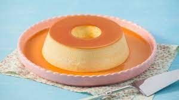

Livro de Receitas
Conheça essas receitas especiais de sobremesa:
- Pudim de Leite Condensado
- Torta de Bolacha
- Gelatina Colorida
Pudim de Leite Condensado
Lista de Ingredientes
- 1 lata de leite condensado
- 1 lata de leite (medida da lata de leite condensado)
- 3 ovos inteiros
- 1 xícara (chá) de açúcar
- 1/2 xícara de água
Quer saber mais sobre o preparo dessa receita? Acesse:
Pudim de Leite

Torta de Bolacha
Lista de Ingredientes
- 1 lata de leite condensado
- 3 gemas
- 1 litro de leite
- 4 colheres de sopa de amido de milho dissolvido
1/2 cícara de chá de leite
- 1/2 xícara de chá de açucar
- 3 claras
- 1/2 xícara de chá de açucar
- 1 lata de creme de leite
- 1 pacote de Bolacha Maria
Quer saber mais sobre o preparo dessa receita? Acesse:
Torta de Bolacha
Gelatina Colorida
Lista de Ingredientes
- 1 gelatina de uva
- 1 gelatina de abacaxi
- 1 gelatina de morango
- 1 gelatina de limão
- 1 gelatina de tutti-frutti
- 1 gelatina sem sabor
- 1 caixa de leite condensado
- 1 caixa de creme de leite
Quer saber mais sobre o preparo dessa receita? Acesse:
Gelatina Colorida